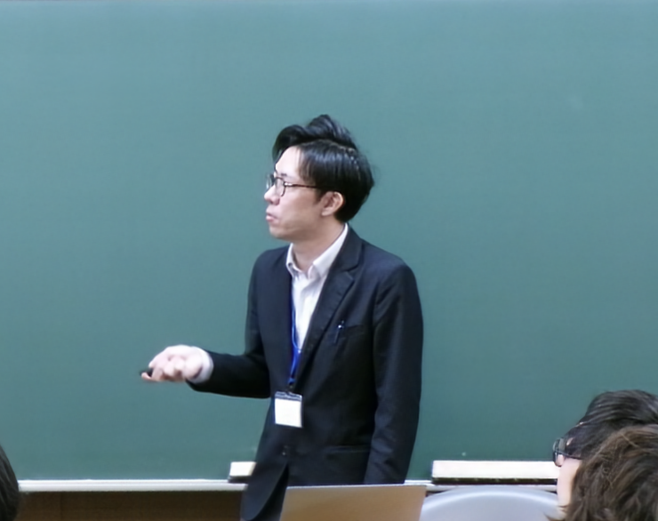

堀 篤史
助教，名古屋工業大学 大学院工学研究科（令和7年4月1日より）
数理最適化，非線形最適化理論の均衡問題への応用（ナッシュ均衡問題，ロバスト均衡問題）
研究成果
- 研究成果や実績については researchmap をご覧ください
ニュース
- 2026/06/19：プレプリントを公開しました（arXiv:2606:20013）
- 2026/05/08：ウェブサイトをリニューアルしました
- 2026/05/07：プレプリントを公開しました（arXiv:2605.05860）
- 2026/05/01：最新の研究成果や実績については researchmap の方で更新していきます（更新の手間削減のため）
- 2026/04/10：科学研究費助成事業 若手研究に採択されました（課題番号：26K21172，研究代表者）
- 2025/04/01：成蹊大学理工学部から名古屋工業大学大学院工学研究科へ異動しました
連絡先
メール: hori [*] nitech.ac.jp